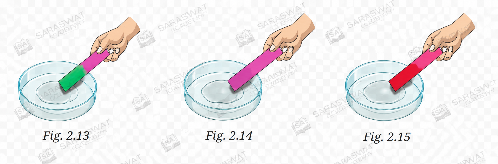

SCIENCE CLASS- 7
CHAPTER-2 (Exploring Substances: Acidic, Basic, and Neutral)
Let Us Enhance Our Learning
1. A solution turns the red litmus paper to blue. Excess addition of which of the following solution would reverse the change?
Answer: (iii) Vinegar
If red litmus paper turns blue, the solution is basic. Vinegar is acidic in nature. Adding excess vinegar will make the solution acidic again, causing the indicator to show the reverse change.
2. Based on the observations, which is the correct sequence for the nature of solutions A, B and C?
Answer: (iv) Basic, basic, and basic
Solution A turns red litmus blue, indicating it is basic. Solution B turns turmeric red, showing it is basic. Solution C turns red rose extract green, which also indicates a basic solution. Therefore, all three solutions are basic.
3. Observe and analyse Figs. 2.13, 2.14 and 2.15. Label the nature of solutions present in each of the containers.

Answer:
Fig. 2.13: Basic solution (green colour)
Fig. 2.14: Neutral solution (no colour change)
Fig. 2.15: Acidic solution (red/pink colour)
Red rose extract turns green in a basic solution, remains unchanged in a neutral solution, and turns red in an acidic solution.
4. A liquid sample was tested using various indicators. Identify its nature and justify your answer.
Answer: The liquid is acidic in nature.
Blue litmus paper turned red, which is the characteristic property of acids. Red litmus showed no change and turmeric also showed no change. Therefore, the liquid is acidic.
5. Manya is blindfolded. She is given two unknown solutions to test. Which indicator should she use and why?
Answer: Manya should use an olfactory indicator such as onion.
Since she cannot see colour changes while blindfolded, she can identify the nature of solutions through changes in smell. Olfactory indicators change or lose their odour in acidic or basic media and can be detected without sight.
6. Suggest materials that can be used for writing the message on white paper and what could be in the spray bottle.
Answer:
| Writing Material | Spray Liquid | Colour Obtained |
|---|---|---|
| Soap solution | Turmeric solution | Reddish-brown |
| Baking soda solution | Turmeric solution | Red |
| Lemon juice | Red rose extract | Red/Pink |
| Vinegar | Red rose extract | Red |
| Soap solution | Red rose extract | Green |
The hidden message becomes visible because indicators change colour when they come into contact with acidic or basic substances.
7. Grape juice was mixed with red rose extract and became red. What will happen if baking soda is added?
Answer: The colour will change from red to green.
Grape juice is acidic, so red rose extract shows a red colour. Baking soda is a base. When baking soda is added, the mixture becomes basic and the red rose extract changes to green.
8. Keerthi wrote a secret message using orange juice. How can her grandmother reveal it?
Answer: Orange juice contains citric acid and is acidic in nature. Her grandmother can spray or apply red rose extract on the paper.
The acidic orange juice will react with the indicator and the hidden writing will appear in a red or pink colour.
9. How can natural indicators be prepared? Explain with an example.
Answer:
Natural indicators are prepared from naturally occurring substances such as flowers, turmeric, beetroot, or cabbage. For example, to prepare a red rose indicator, red rose petals are crushed and soaked in hot water. After a few minutes, the coloured liquid is filtered. The filtrate obtained acts as a natural indicator that turns red in acidic solutions and green in basic solutions.
10. Three liquids are given: vinegar, baking soda solution and sugar solution. Can you identify them only using turmeric paper?
Answer:
Yes, partially.
Baking soda solution will turn yellow turmeric paper red, so it can be identified as a base. However, vinegar and sugar solution do not change the colour of turmeric paper. Therefore, turmeric paper alone cannot distinguish between vinegar and sugar solution.
11. The extract of red rose turns liquid X green. What is the nature of liquid X? What happens when excess amla juice is added?
Answer:
If red rose extract turns green, liquid X is basic in nature.
Amla juice contains acids. When excess amla juice is added, it neutralises the base and eventually makes the solution acidic. As a result, the colour of the red rose extract changes from green to red.
12. Complete the flowchart.
Answer:
The soil can be acidic in nature.
The soil can be basic in nature.
Indicator used: Litmus paper / Red rose extract indicator.
The acidic soil can be treated with: Lime.
The basic soil can be treated with: Manure or compost.